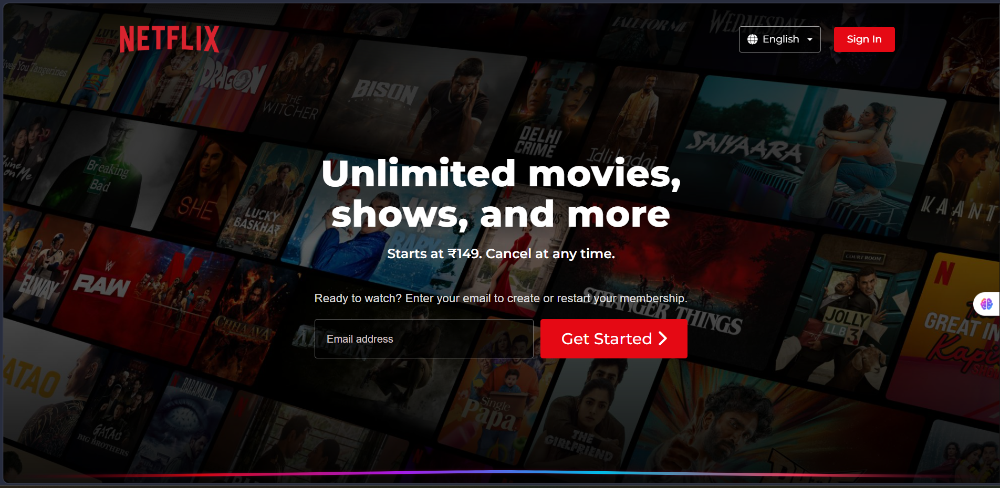
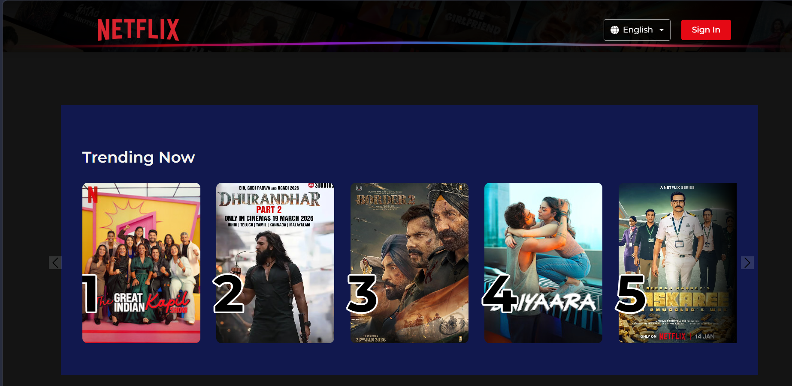
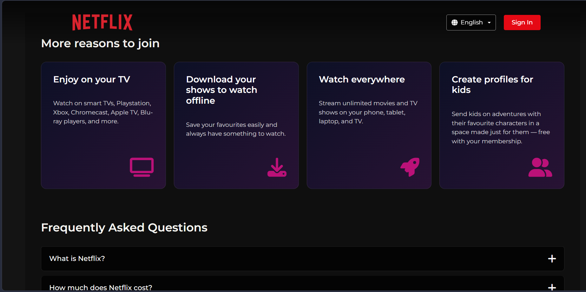

Homepage View
Main landing section with strong visual hierarchy, hero content, and call-to-action placement.
This project is a responsive Netflix-inspired landing page built to practice layout structure, typography, spacing, responsive design, and modern frontend presentation. It focuses on building a clean, visually balanced interface that works smoothly across desktop, laptop, tablet, and mobile screens.

Main landing section with strong visual hierarchy, hero content, and call-to-action placement.

Responsive content area designed with clean spacing, readable text, and balanced visual layout.

Designed a compelling call-to-action section focused on maximizing user engagement and encouraging seamless subscription conversion."